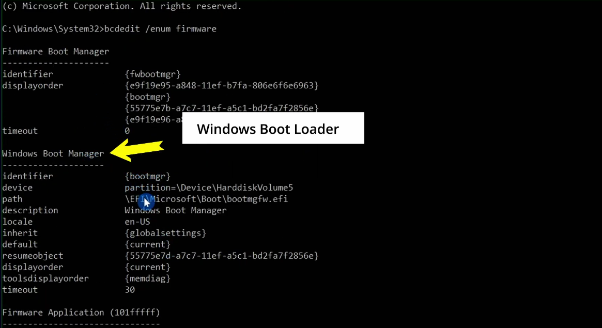
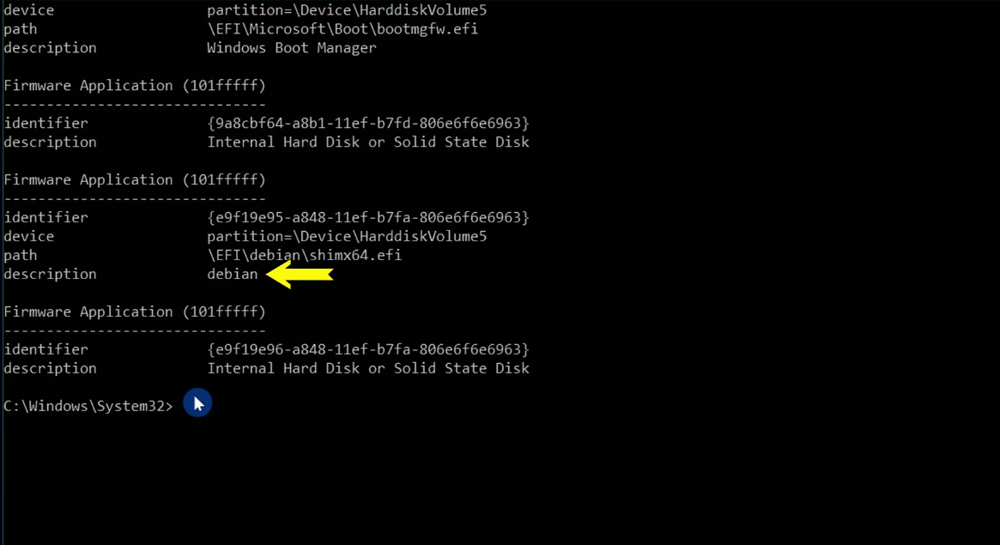
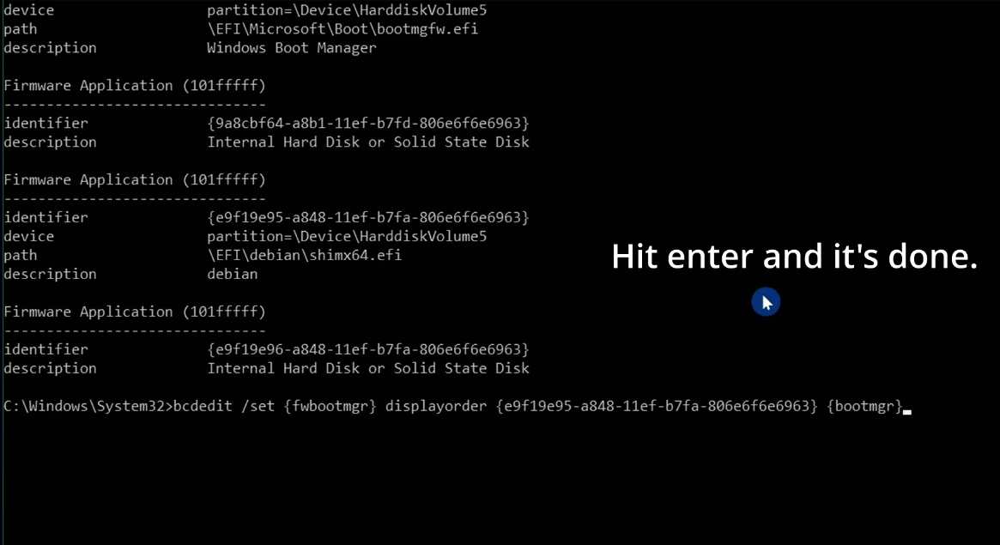

Why this happens
Windows updates occasionally rewrite the firmware boot manager settings. When that happens, the system may prioritize Windows Boot Manager over the Linux bootloader. That does not mean your Linux files are gone — it simply means the boot priority order changed.
Your Linux partition and data remain intact. This is usually a boot-order issue, and it can be fixed directly from Windows using the built-in bcdedit tool.
Prerequisites
- Windows 11 is booting normally
- You have admin rights
- You know the GRUB boot entry identifier
Step 1: Open Command Prompt as Administrator
Search for Command Prompt in the Start menu, right-click it, and choose Run as administrator.
Step 2: View all firmware boot entries
Run the following command:
bcdedit /enum firmware

This lists all boot entries registered in firmware. Look for two entries:
- Windows Boot Manager with the identifier {bootmgr}
- Your Linux bootloader or distro entry, usually described as Linux Boot Manager or the distro name.
Copy the GRUB identifier exactly as it appears. It will look like a long GUID in curly braces, such as {XXXXXXXX-XXXX-XXXX-XXXX-XXXXXXXXXXXX}.
Step 3: Set GRUB to boot first
Now run this command in the Administrator Command Prompt:
bcdedit /set {fwbootmgr} displayorder {GRUB ID} {bootmgr}
Replace {GRUB ID} with the exact identifier you copied from the firmware list. This tells the system to load GRUB before Windows. The order matters: GRUB first, Windows second.
Step 4: Restart and confirm
Restart the PC. You should now see the GRUB menu again, with both your Linux distro and Windows listed as boot options.
{fwbootmgr} points to the system firmware boot manager. The displayorder list decides the boot priority. By placing the Linux entry first, GRUB is restored as the default bootloader.
Quick troubleshooting
| Issue | Fix |
|---|---|
| Command Prompt says “Access is denied” | Run it as administrator and make sure your account has elevated permissions. |
| Can’t find the Linux entry | Your Linux bootloader may not be registered in firmware; try booting from a live USB and reinstalling GRUB. |
| GRUB shows up but Linux won’t boot | That is a separate issue. Reinstall GRUB from a live Linux USB to repair the installation. |
Next steps
If you are setting up dual boot for the first time, check out our step-by-step dual boot guide to make sure everything is configured correctly.
If the GRUB menu still does not appear after this fix, leave a comment or follow the same process from a Linux live USB to reinstall the bootloader and restore startup access.